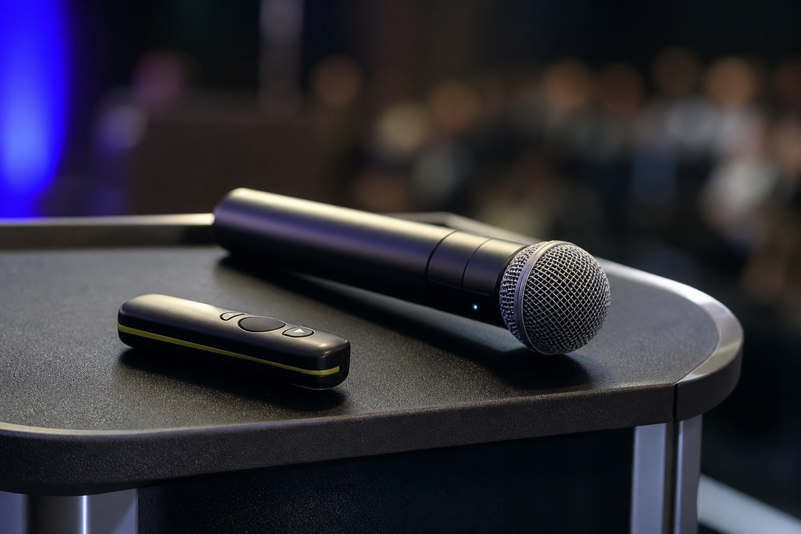

From the back of the house, you learn what speakers do that works — and what makes an audience disappear into their phones.
I've watched a lot of conference stages. The tech can only save you so much. Here's what helps before you hit the lectern.
Arrive early enough to meet the console
Soundcheck isn't optional theater. Clip the mic, say a full sentence, check the confidence monitor, advance three slides with the house clicker. Fix font and video issues now.
Know where you're allowed to walk
Stage edges, cable runs, and spotlight focus have boundaries. Ask. Pacing into the dark side of the stage is how you disappear from the livestream and the third row.

Slide discipline
One idea per slide. No paragraphs. If you need the detail, put it in a handout. The screen behind you is not a teleprompter for the people in the back.
Mic manners
- Don't cup the grille
- Don't look down at notes and talk into your chest
- If you go handheld, keep it consistent — swinging it away kills level
End on time
The next speaker, the breakout move, and catering are watching the clock. A strong close at time beats a brilliant digression that steals someone else's slot.
We set the room so your talk can land. You still have to land it.
Speaking at a conference soon?
We'll set the room so your talk lands — mic, confidence monitor, and cues that stay out of the way.
Start a project